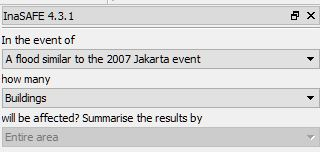
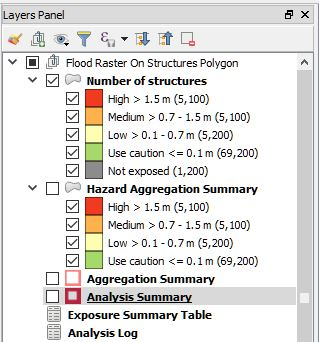
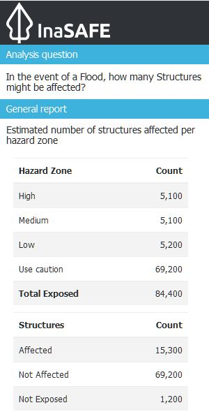
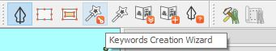
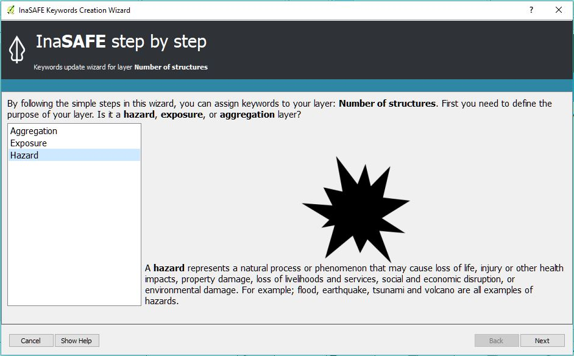
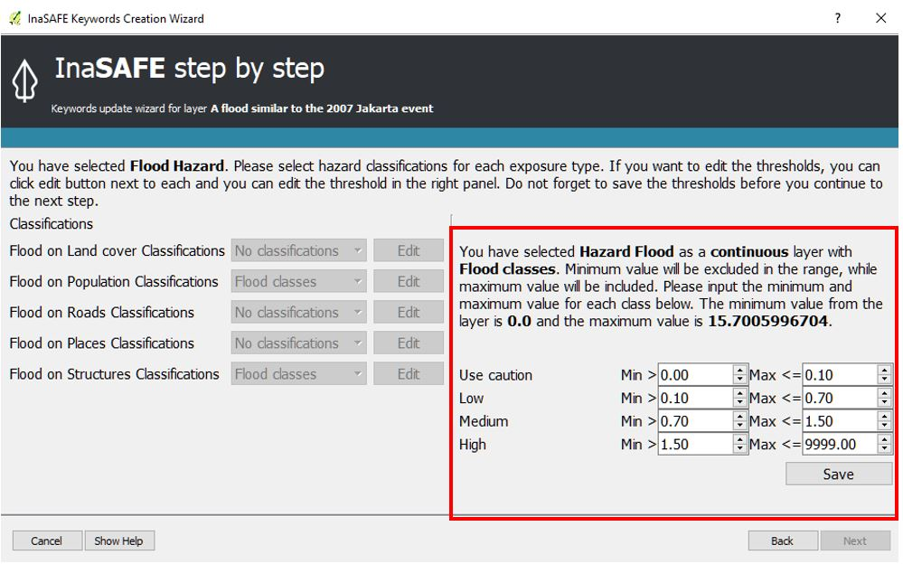
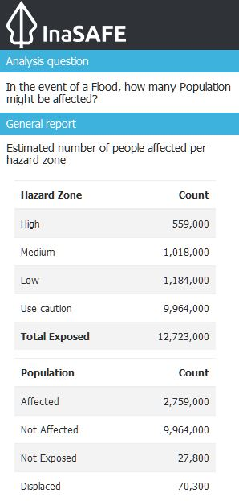
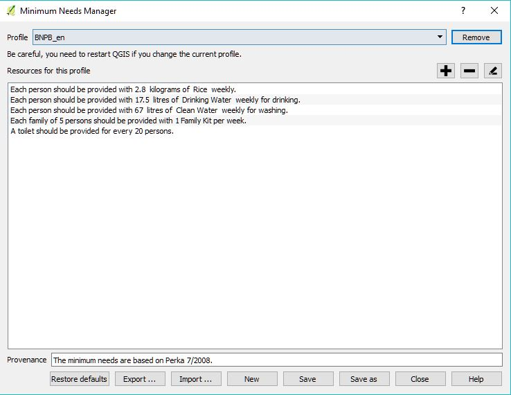
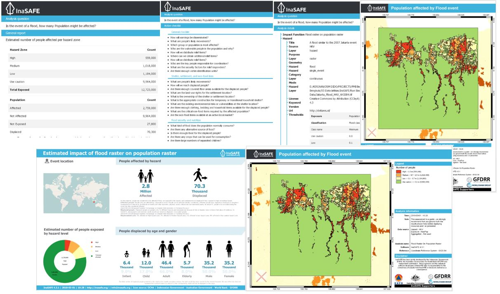

Run Basic InaSAFE¶
Introduction¶
In this exercise we will work through an example scenario where we show how the different data elements used by InaSAFE are combined in order to analyse the potential impact of a flood in Jakarta on both the buildings and the population.
After we have run the InaSAFE analysis we will print the map and analysis report as pdf and review the results. We will also learn how to change the flood threshold and take a look at the default settings for minimum needs. We will also learn how to save our work.
Learning objective¶
To develop the participant’s basic understanding of the InaSAFE workflow and application of InaSAFE in the Disaster Management sector. By the end of this exercise, participants will:
Be able to run a flood analysis using InaSAFE - on buildings;
Be able to run a flood analysis using InaSAFE - on population;
Understand the flood impact default settings;
Understand the impact summary report;
Be able to change the analysis threshold and run a new scenario;
Be able to generate a PDF map from the results of an analysis; and
Be able to save their work to share results with others.
Data for this exercise¶
The data for this exercise are available in Run Basic InaSAFE zip which can be downloaded from InaSAFE Training Data Packages . We will use the following QGIS project file and spatial data:
DKI_Jakarta_Basic.qgs
Jakarta_Flood_HKV_WGS84
Jakarta_Buildings_WGS84
Jakarta_Population_WGS84
Exercise¶
1. Open QGIS Project¶
Before we can run an InaSAFE analysis, we must open a QGIS project.
Please open the QGIS project file DKI_Jakarta_Basic.qgs from the InaSAFE
Training Data > DKI Jakarta folder. The project looks something like
this:
{kind=link}
As you can see from the picture above, you will be presented with several data sets for Jakarta such as buildings, population, and raster hazard.
You will see that the project has three layers loaded:
Buildings: this is exposure data. We will use these to assess the flood impact on buildings.
Flood: this is the hazard model. We will use this to determine the depth of water.
Population: this is a population raster. We will use it to determine the number of people exposed to the flood.
More detailed information about the data used in this exercise can be found in dataset section. The table below provides a brief summary about the source of the data.
Data |
Source |
Description |
|---|---|---|
Buildings |
OpenStreetMap |
Most of the important buildings in Jakarta have been mapped through the collaboration of BPBD DKI Jakarta, OpenStreetMap and the Australian Government. See more at.. |
Jakarta_population_WGS84 |
WorldPop |
High resolution, modelled data for human population distributions. See more at.. |
|
HKV |
The flood model was created by scientists/engineers in coordination with DKI Jakarta Public Works based on the 2007 flood conditions. See more at.. |
Let’s move into the next section where we will run our first InaSAFE analysis using these data. We will be working with the flood hazard model to look at the number of affected buildings. These data already have keywords assigned so we are ready to run the analysis.
2. Run InaSAFE Analysis for Building¶
Take a look at the InaSAFE dock on the right side of QGIS. The InaSAFE dock should show that you are ready to run a flood analysis on buildings. It poses the question “In the event of a flood similar to the 2007 Jakarta event, how many buildings will be affected?” In this analysis we will use the default flood depth threshold in “Flood Classes” which have 4 classes (High, Medium, Low, Use Caution). Later on we will learn how to change the threshold.
a. Run InaSAFE Analysis¶
{kind=link}
Click Run in the lower right corner of the InaSAFE panel to start the analysis process. If everything was set up correctly, you should get a result in the dock area after a few seconds, and a new map layer should be added to the map.
{kind=link}
b. Interpret the results¶
The new impact layer will be generated and called Number of structures. Let’s take a look at the new impact layer generated by InaSAFE.
Zoom in to some area on the map canvas
Here we have zoomed in to a location showing two rivers going through the middle of Jakarta. There will be five new different colours generated from InaSAFE (red, orange, light yellow, green, and grey).
{kind=link}
Note
If you don’t see these colours, you might need to turn off the data layer above the Number of structures layer.
The red buildings are situated in High Hazard with inundation water greater than 1,5 metre. The orange buildings are situated in a Medium Hazard with inundation water between 0,7 - 1,5 metre. The light-yellow buildings are situated in Low Hazard with inundation water between 0,1 - 0,7 metre. The green buildings show you that these buildings are currently not classified as an affected building, but, we can identify these buildings with Use Caution. It is like some kind of warning system, so we can identify which buildings needs more attention when the flood happen. The grey buildings considered as unaffected with the flood hazard model.
Click Number of structures in the layer list to select it and click Identify Feature tool and then click on a building to view the attributes of that building.
{kind=link}
In the InaSAFE panel we now see the impact summary. The details of are explained below.
{kind=link}
Analysis Question: describe what kind of analysis happens in this scenario
General report: InaSAFE divides the result into several categories based on the threshold set in the hazard analysis. In this impact summary, InaSAFE divides the estimated number of structures based on two categories, Hazard Zone (buildings affected based on High, Medium, Low, and Use Caution class) and Structures (buildings affected based on Affected by flood, Not Affected by flood, and Not Exposed by flood)
Analysis detail: describe more detail about estimated number of structures by structure type. In this impact summary, InaSAFE breaks down the results into a more detailed report by looking at each type of the structure, for example, the number of residential affected by flood is 4.300, meanwhile, the number of education structures affected by flood is 210. We can see more detail about the type of structuress affected by the hazard in this section.
Action checklist: designed to make disaster managers think about what they need to do/discuss when planning for a similar event in the future.
Notes & assumptions: provides details about the input data and any limitations or assumptions in the analysis or report summary. In this example, it explains why buildings are said to be inundated, wet and dry.
Analysis detail: gives the information about data source, and details about analysis that we have
The results show the buildings that will be affected by flood water 1m deep. But what if the disaster manager decides that buildings in 80cm of water are also flooded? In order to assess this new scenario, we need to change the water depth threshold at which buildings are considered to be inundated. With InaSAFE it is easy to run a new scenario, all you need to do is change the Thresholds [m] in the InaSAFE Keyword Creation Wizard and run the scenario again. We will do this next.
c. Changing threshold¶
In the Jakarta flood scenario we are running; the threshold refers to the depth of water that a disaster manager decides is the boundary between buildings being flooded (affected) and buildings not being affected.
Note
You can only change the threshold for raster hazard data. The default threshold for this hazard is 1m or 100cm.
If you want to change the thresholds for the flood in this scenario, you can do it from InaSAFE toolbar menu and select Keyword Creation Wizard. But, before you select on Keyword Creation Wizard menu, make sure that you already selected the flood layer in the layer panel window.
If you want to open the InaSAFE question panel again, click on Show question form at the top of the InaSAFE panel. You will see the InaSAFE question panel again and you can click the Options button next to be flooded.
{kind=link}
InaSAFE Keyword Creation Wizard will automatically show on your screen. We must define the flood as a Hazard layer, therefore, please select Hazard and then click Next.
{kind=link}
Follow all the step and click Next until you found changing thresholds menu like this:
{kind=link}
Choose Flood classes to define the thresholds. Look at the right bottom of your screen. You can see the configuration of the thresholds and now you can make change to the thresholds.
In this case, we define that the flood impact has 4 classes; High, Medium, Low, and Use Caution. In each class, we can define the minimum and maximum value for each thresholds. The threshold is automatically set that High classes is the area greater than 1.5 metre of inundation, Medium class is the area with 0.7 - 1.5 metre of inundation, Low class is the area with 0.1 - 0.7 metre of inundation, and last, Use Caution class 0 - 0.1 metre. We can define each threshold based on our needs. If we want to change the value, you can change it manually. The analysis result will be different if we see different value for each classes.
After finish changing the thresholds, don’t forget to click Save and finish all steps needed. Close the dialog window and then run the analysis again to see the change in the result.
When the function completes, take a look at the impact summary in the InaSAFE panel. How do the results compare to the first analysis results? The result should be different to the first analysis because we have changed the thresholds for each classes.
Note
ask your tutor to explain if you do not understand this.
This completes our first InaSAFE analysis using the flood hazard model to look at the number of affected buildings.
3. Run InaSAFE for population¶
We are now ready to run our second InaSAFE analysis using the flood hazard data for Jakarta. We will be working with the flood hazard model again, but this time to look at the number of impacted people. These data already have keywords assigned so we will be ready to run the analysis as soon as we have turned on the relevant data layers.
In the QGIS, turn OFF the Buildings and Number of structures (the layers generated from InaSAFE analysis and turn ON Jakarta_Population_WGS84 layer.
Confirm that the InaSAFE panel on the right side is set to query how many people might need evacuation:
A flood similar to the 2007 Jakarta event
People
{kind=link}
a. Run InaSAFE Analysis¶
If everything is setup correctly, the InaSAFE dock should show that you are ready to run a flood analysis on population. It poses the question “In the event of a flood similar to the 2007 Jakarta event, how many people will be affected?” In this analysis we will use the default flood depth threshold by Flood classes. After everything is setup accordingly click Run to process the new scenario.
Note
Notice that if you click on the drop-down list on “How Many People, the building option is not available. This is because building is not checked in the Layers panel.
b. Interpret the results¶
If everything was set up correctly, you should get a result in the dock area after a few seconds, and a new map layer should be added to the map. The new impact layer will be called Number of people. Let’s explore the result again to make you understand more about the InaSAFE result.
Turn off Number of structures layer and drag the Number of people above a flood similar to 2007 Jakarta event
Zoom in to an the area you choose
Select Number of people in the layer list and use Identify Feature tool again to select a pixel (square) in the map canvas.
Here we clicked on one of the red pixels and find that there is a population exposure count with value of 78, which means there are approximately 78 people in this one pixel (square) who need to evacuate because of the flood.
{kind=link}
In the InaSAFE panel we now see the impact summary. The details of this summary are explained below.
{kind=link}
Analysis question: describe what kind of analysis happens in this scenario
General report: InaSAFE divides the results into several categories based on the thresholds set in the hazard analysis. in this impact summary, InaSAFE divides the estimated number of people based on two categories, Hazard Zone (Hgh, Medium, Low, and Use caution) classes based on the thresholds that we defined before and Population (population affected based on Affected, Not affected, and Not exposed by flood)
Minimum needs: these are the calculated amounts of food, water, and other products that are needed by evacuated people. These needs should be provided weekly.
Action checklist: designed to make disaster managers think about what they need to do/discuss when planning for a similar event in the future.
Notes and assumptions: provides details about the input data and any limitations or assumptions in the analysis or report summary. In this example, it shows the total number of population in the analysis area and the source of minimum needs.
Detailed demographic breakdown: this part of analysis give more information about the demographic of people affected by flood. We can see the breakdown based on age or gender.
Analysis detail: gives the information about data source, and details about analysis that we have.
c. Understand defaults minimum needs¶
The InaSAFE impact summary for flood impact on people includes details for the amount of drinking water, rice, clean water, and family kits and for the number of toilets that should be provided for displaced persons each week. The minimum needs in the Jakarta flood impact assessment are based on the Head of Indonesia National Disaster Management Authority, BNPB, regulation, PERKA No 7/2008 guideline procedure for fulfillment of basic needs in Disaster Response. The default minimum needs formula is:
400g rice per person per day (2.8kg per week)
2.5l drinking water per person per day (17.5l per week)
15l clean water per person per day (105l per week)
one family kit per family per week (assumes five people per family which is not specified in perka)
20 people per toilet
As described above, the impact summary and minimum needs calculation is based on the default world population demographics (which assumes a ratio of 26.3% youth, 65.9% adult and 7.9% elderly).
You may like to refer to local population statics (for example - Population of DKI Jakarta) to change these defaults for your analysis area, similarly if you have other regulation for minimum needs, you can change in the menu Plugins - InaSAFE - Minimum Needs Configuration.
{kind=link}
4. Print and Save your InaSAFE Results¶
We can also print the analysis results; the impact map and the impact summary, as two separate pdf files. To print InaSAFE result:
Click Print at the bottom of the InaSAFE panel.
InaSAFE will show you Impact report window. In InaSAFE reports section, you can choose what kind of report that you want to print. In Map reports, you can choose the template of your map reports.
{kind=link}
InaSAFE will automatically make map and analysis result based on the scenario you created before. You will be directed to new page that contain maps and analysis result.
You can access your reult based on the directory path show in the result box. You can change the directory of your result in Menu Plugin – InaSAFE – Options - GIS Environment - Location for result. In Location for results, change the directory as you want to. It will make you easier to find the result of your analysis.
{kind=link}
Note
By default, all the InaSAFE reports will be stored in C:\users\<YOUR_USERNAME>\appdata\local\temp\inasafe for Windows or /tmp/InaSAFE for Linux. You must enable “Show Hidden Folder” option in Windows if you want to see appdata folder.
InaSAFE will be generate several PDFs (usually 4-6 PDFs), one shows a map with the impact layer in potrait orientation, one shows a map wih the impact layer in landscape orientation, one shows an analysis provenance details report, one shows a list of action checklist output, and one has tables from the impact summary or impact report. But, if we generate the result of population analysis, one additional PDF will shows up which give the information about the infographic of impact summary.
{kind=link}
Note
InaSAFE will generate infographic result if we make analysis of population only.
We are now already have the impact result in pdf files, but what if we want to keep the impact result in shapefile? Is the impact result shapefile automatically stored?
The InaSAFE impact result layer is saved in a temporary folder, this means that it will be automatically deleted if you restart your computer, unless you save your QGIS project. If you want to keep your InaSAFE results (so you can refer to them again or share them with others), you need to manually save the InaSAFE impact layer InaSAFE as new layer in same directory as your project.
Right click on your InaSAFE analysis result, for example Number of structures or Number of people and click Save As…
A new window will appear. Click Browse… and name your new layer and click Save and then click OK.
If you want to save your current project you can save it by clicking on to save your current project. It’s better to not overwrite the training project so you can do the exercise again later.
Summary¶
In this exercise you have learned how to run a basic InaSAFE analysis using an existing QGIS project file and what the minimums component that must be there to run InaSAFE properly are. Those components are hazard and exposure data. In this exercise, you have run an InaSAFE impact assessment for a flood scenario in Jakarta using two types of exposure data. The hazard data you used was a modelled flood raster and the exposure data were buildings and population. These analyses produced impact layers and impact summaries for affected buildings and impacted people.
You have also learned how to modify the analysis options through the Impact Function configuration, how to print InaSAFE results in PDF format, understand what minimum needs is and how to save both your impact layers and your QGIS project file.
In the next section you will learn more about how to run InaSAFE in more detail. In that module you will learn how to use more InaSAFE tools such as Agreggation options, OSM Downloader, Minimum Needs Configuration, etc.